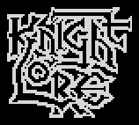 |
Animations |
Knight Lore has no animation frames as such. An object's type -- the first byte of its 32-byte record -- chooses both the routine that runs it each frame, through upd_sprite_jmp_tbl, and the sprite it is drawn with, through sprite_tbl, so an object animates by changing its own type: a walk is six types in a row, a flicker is bit 0 of the type turned over, a sparkle counts its type up and at the end of its run turns into something else. The runs of types, and how fast each handler steps through them, are the animations.
Each animation below was made by running the game's own code in a simulator when these pages were built: a room with the thing in it, one real frame of the game after another -- the handlers, the renderer and the copy to the screen -- with each picture read off the screen. So Sabreman, the guards and the wizard are put together by the game from their two records, the frames come in the game's order, and each is shown for as long as the game took over it (counted in the simulator, without the memory contention of a real Spectrum). A figure that walks is kept in the middle of its picture. Under each, the types in each frame of the picture and how long it lasts; a type that stays on screen for several game frames is one frame of the picture.
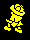
Legs 16-21 in record 0 and the upper body 32-37 in record 1: the legs' handler (upd_16_to_21_24_to_29, into upd_player_bottom) steps the low three bits of the type 0, 1, ... 5, 0 every frame while forward is held (animate_human_legs), and upd_player_top then sets the upper body to the legs' type + 16 (set_top_sprite), so the two halves change together. The six legs types name only four sprites, 1 2 3 4 3 2; the upper body's six name four more. View A is type bit 3 clear; this one is unmirrored, walking towards -X.
Types and their sprites: 16 (spr_055), 17 (spr_056), 18 (spr_057), 19 (spr_058), 20 (spr_057), 21 (spr_056), 32 (spr_050), 33 (spr_051), 34 (spr_046), 35 (spr_049), 36 (spr_046), 37 (spr_051).
In the picture: 16+32 (40ms), 17+33 (50ms), 18+34 (50ms), 19+35 (50ms), 20+36 (40ms), 21+37 (50ms).
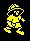
The same cycle with type bit 3 set: legs 24-29 and upper body 40-45, unmirrored, walking towards +X. Mirroring (+$07 bit 6) makes the other two of the four facings out of these two views (get_sprite_dir).
Types and their sprites: 24 (spr_059), 25 (spr_060), 26 (spr_061), 27 (spr_062), 28 (spr_061), 29 (spr_060), 40 (spr_052), 41 (spr_047), 42 (spr_054), 43 (spr_053), 44 (spr_054), 45 (spr_047).
In the picture: 24+40 (40ms), 25+41 (50ms), 26+42 (50ms), 27+43 (50ms), 28+44 (40ms), 29+45 (50ms).
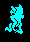
The werewolf is the man's types + 32: legs 48-53 run by upd_48_to_53_56_to_61 (drawn a pixel lower than the man's) and the upper body 64-69 by upd_64_to_79, stepped the same way every frame.
Types and their sprites: 48 (spr_079), 49 (spr_080), 50 (spr_081), 51 (spr_082), 52 (spr_081), 53 (spr_080), 64 (spr_087), 65 (spr_088), 66 (spr_089), 67 (spr_090), 68 (spr_089), 69 (spr_088).
In the picture: 48+64 (40ms), 49+65 (50ms), 50+66 (50ms), 51+67 (50ms), 52+68 (40ms), 53+69 (50ms).
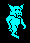
Legs 56-61 and upper body 72-77, unmirrored, walking towards +X.
Types and their sprites: 56 (spr_083), 57 (spr_084), 58 (spr_085), 59 (spr_086), 60 (spr_085), 61 (spr_084), 72 (spr_094), 73 (spr_093), 74 (spr_092), 75 (spr_091), 76 (spr_092), 77 (spr_093).
In the picture: 56+72 (40ms), 57+73 (50ms), 58+74 (50ms), 59+75 (50ms), 60+76 (40ms), 61+77 (50ms).
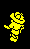
The sun was set one pixel from the edge of its window, so the game's own toggle_day_night turns it to the moon and sets $5BB1. The legs' handler sees it (chk_and_init_transform): the upper body becomes type 1 and is wiped, and the legs take one of types 92-95 at random, never the one showing, mirrored each time (rand_legs_sprite). upd_92_to_95 changes it every fourth frame, by the frame counter, eight times; then finish_transform flips bit 5 of the saved type -- legs 18 to 50 -- and puts the upper body back as that + 16. The four sprites are chosen at random, so another run gives another order.
Types and their sprites: 18 (spr_057), 34 (spr_046), 92 (spr_099), 93 (spr_100), 94 (spr_101), 95 (spr_102), 50 (spr_081), 66 (spr_089).
In the picture: 18+34 (80ms), 93 (220ms), 94 (260ms), 92 (260ms), 93 (260ms), 92 (250ms), 93 (260ms), 92 (250ms), 94 (260ms), 50+66 (310ms).
On every new life (lose_life) and every room entered, both of Sabreman's records are type 120 with the real type kept at +$10. upd_120_to_126 counts the type up on alternate frames of the counter at $5BA2, 120 to 127, and upd_127 then restores the saved type and runs its handler at once. The eight types are the sparkle sprites growing, small to large. The first frame is long because it is the room's first, when the game draws and copies the whole screen.
Types and their sprites: 120 (spr_025), 121 (spr_026), 122 (spr_027), 123 (spr_028), 124 (spr_029), 125 (spr_030), 126 (spr_029), 127 (spr_030), 18 (spr_057), 34 (spr_046).
In the picture: 120+120 (260ms), 121+121 (100ms), 122+122 (110ms), 123+123 (110ms), 124+124 (120ms), 125+125 (120ms), 126+126 (130ms), 127+127 (70ms), 18+34 (210ms).
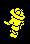
Something deadly sets bit 6 of the legs' +$0D; the legs' handler (upd_player_bottom) marks the upper body too, and both become type 112 (init_death_sparkles). upd_112_to_118_184 adds one every frame, with a noise that shortens as it goes; 119 (upd_119) makes the record type 1, which is wiped and freed. When both records are empty the life is over. The sprites are the materialising ones, large to small.
Types and their sprites: 112 (spr_030), 113 (spr_029), 114 (spr_030), 115 (spr_029), 116 (spr_028), 117 (spr_027), 118 (spr_026), 119 (spr_025).
In the picture: 18+34 (40ms), 112+112 (90ms), 113+113 (90ms), 114+114 (80ms), 115+115 (70ms), 116+116 (80ms), 117+117 (70ms), 118+118 (70ms), 119+119 (60ms), - (60ms).
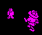
An extra life (type 103, upd_103) tests itself against Sabreman every frame; touching, it sets bit 3 of its type, making 111, adds a life and shows it, and takes itself out of special_objs_tbl. Type 111 (upd_111) is drawn for one frame as a sparkle and then becomes type 1. A charm picked up does not sparkle: it goes straight to the carried objects.
Types and their sprites: 103 (spr_021), 111 (spr_030).
In the picture: 19+35+103 (50ms), 20+36+103 (40ms), 21+37+103 (50ms), 16+32+103 (40ms), 17+33+103 (40ms), 18+34+103 (50ms), 19+35+103 (40ms), 20+36+111 (60ms), 21+37 (40ms), 16+32 (40ms), 17+33 (40ms), 18+34 (40ms).
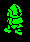
Two records: the body, 150 or 151 (upd_150_151), and the legs in the record after it, 144-149 or 152-157 (upd_144_to_149_152_to_157), which use Sabreman's own legs sprites. The body walks 2 a frame along X and writes its position and velocity into the legs; the legs pick view and mirroring from that and step the same six-frame cycle as Sabreman's, every frame they move. The body's view is bit 0 of its type, set by set_guard_wizard_sprite.
Types and their sprites: 150 (spr_005), 151 (spr_004), 144 (spr_055), 145 (spr_056), 146 (spr_057), 147 (spr_058), 148 (spr_057), 149 (spr_056), 152 (spr_059), 153 (spr_060), 154 (spr_061), 155 (spr_062), 156 (spr_061), 157 (spr_060).
In the picture: 150+144 (40ms), 150+145 (50ms), 150+146 (50ms), 150+147 (40ms), 150+148 (40ms), 150+149 (50ms).
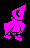
Built the same way as a guard: the body, 158 or 159 (upd_30_31_158_159, which walks him round the edge of the room, turning a quarter whenever he is blocked), one frame per view, over the same legs (upd_144_to_149_152_to_157).
Types and their sprites: 158 (spr_013), 159 (spr_012), 144 (spr_055), 145 (spr_056), 146 (spr_057), 147 (spr_058), 148 (spr_057), 149 (spr_056), 152 (spr_059), 153 (spr_060), 154 (spr_061), 155 (spr_062), 156 (spr_061), 157 (spr_060).
In the picture: 158+144 (40ms), 158+145 (50ms), 158+146 (50ms), 158+147 (50ms), 158+148 (40ms), 158+149 (50ms).
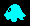
upd_80_to_83 turns the type's bit 0 over every frame, a two-frame flicker; bit 1 and the mirroring give the view, chosen from its direction whenever it picks a new one (calc_ghost_sprite). Here it drifts one way, flickering between 82 and 83, until the edge of the room turns it, and the new directions show the other view.
Types and their sprites: 80 (spr_039), 81 (spr_040), 82 (spr_041), 83 (spr_042).
In the picture: 83 (50ms), 82 (50ms), 83 (50ms), 82 (50ms), 83 (50ms), 82 (60ms), 83 (50ms), 82 (50ms), 83 (50ms), 82 (50ms), 83 (50ms), 82 (60ms), and so on: 16 frames, 0.9s in all.
upd_176_177 flips the type's bit 0 on alternate frames -- by bit 0 of $5BBC, the frame counter plus the object's place in the table, so fires side by side flicker out of step -- and on each flip toggles the mirroring when a bit of the random byte at $5BA5 is set.
Types and their sprites: 176 (spr_010), 177 (spr_011).
In the picture: 176 (110ms), 177 (110ms), 176 (120ms), 177 (110ms), 176 (110ms), 177 (110ms), 176 (120ms), 177 (110ms).
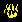
upd_86_87 moves it 2 a frame and flips bit 0 of the type every frame, over the same two sprites as the fire; the flame along Y (180, 181, upd_180_181) is the same.
Types and their sprites: 86 (spr_010), 87 (spr_011).
In the picture: 87 (50ms), 86 (50ms), 87 (50ms), 86 (50ms), 87 (50ms), 86 (60ms), 87 (60ms), 86 (60ms).
upd_178_179 flips the type every frame while the ball rises 2 a frame to a ceiling 32 above the first ball in the room and falls back under gravity. One bounce, from a landing to the next; the picture stays put while the ball moves in it. The ball that hops at Sabrewulf (182, 183, upd_182_183) uses the same two sprites, also a frame each.
Types and their sprites: 178 (spr_006), 179 (spr_007).
In the picture: 178 (80ms), 179 (60ms), 178 (60ms), 179 (60ms), 178 (70ms), 179 (60ms), 178 (60ms), 179 (60ms), 178 (60ms), 179 (60ms), 178 (60ms), 179 (60ms), and so on: 27 frames, 1.7s in all.
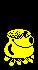
In the wizard's room, $88, init_cauldron_bubbles puts the bubbles in record 3, type 160 (here the cauldron is alone in a room of that number). upd_160_to_163 adds one to the type's low two bits every frame (next_graphic_no_mod_4: 160, 161, 162, 163, sprites of the sparkle, small, smaller, smallest, smaller) while they rise one unit a frame; at the top, each time the cycle comes back to 160 they show the charm wanted next (168 + its number) for one frame, and upd_168_to_175 puts them back to 160 -- one frame in five. If Sabreman is the werewolf they turn into the repel spell, 164-167, the same four sprites.
Types and their sprites: 160 (spr_030), 161 (spr_029), 162 (spr_028), 163 (spr_029), 168 (spr_031), 169 (spr_032), 170 (spr_022), 171 (spr_033), 172 (spr_034), 173 (spr_035), 174 (spr_036).
In the picture: 141+142+161 (40ms), 141+142+162 (40ms), 141+142+163 (40ms), 141+142+160 (40ms), 141+142+161 (40ms), 141+142+162 (40ms), 141+142+163 (50ms), 141+142+160 (40ms), 141+142+161 (40ms), 141+142+162 (40ms), 141+142+163 (40ms), 141+142+160 (40ms), and so on: 51 frames, 2.3s in all.
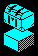
Type 143 (upd_143) waits for something to land on it -- here a chest placed above it. Then it makes itself 184 and goes straight on into upd_112_to_118_184, which adds one with a noise, so the first thing drawn is 185; the next frame 185 (upd_185_187) vanishes. One frame of sparkle, and the chest falls through. The block is back when the room is next built.
Types and their sprites: 143 (spr_020), 184 (spr_030), 185 (spr_029).
In the picture: 143+85 x4 (220ms), 185+85 (60ms), 85 x5 (280ms).
Not an animation of the sprite: the sun (88) or moon (89) is a record of its own at sun_moon_scratchpad that print_sun_moon moves one pixel right every eighth frame along an arc, drawn behind the two ends of the window frame; after 49 steps toggle_day_night flips it to the other one. Shown here eight times faster than the game: a day and a night, 98 steps, are 784 game frames.
Types and their sprites: 88 (spr_037), 89 (spr_038).
In the picture: 88 x49 (2940ms), 89 x49 (2940ms).